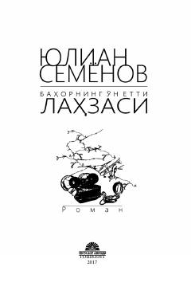

BOIkkinchi jahon urushi davridagi jasur sovet razvedkachisi Maksim Isayevning murakkab operatsiyalari haqidagi tarixiy roman.
Ikkinchi jahon urushining so'nggi kunlarida fashistlar Germaniyasining ichki doiralarida yashirin faoliyat yuritayotgan sovet razvedkachisi Maksim Isayevning qahramonliklari haqida hikoya qilinadi. Asar fashistlarning G'arb davlatlari bilan yashirin sulh tuzishga bo'lgan urinishlarini fosh etish va ularning rejalarini barbod qilishga qaratilgan murakkab operatsiyani tasvirlaydi.